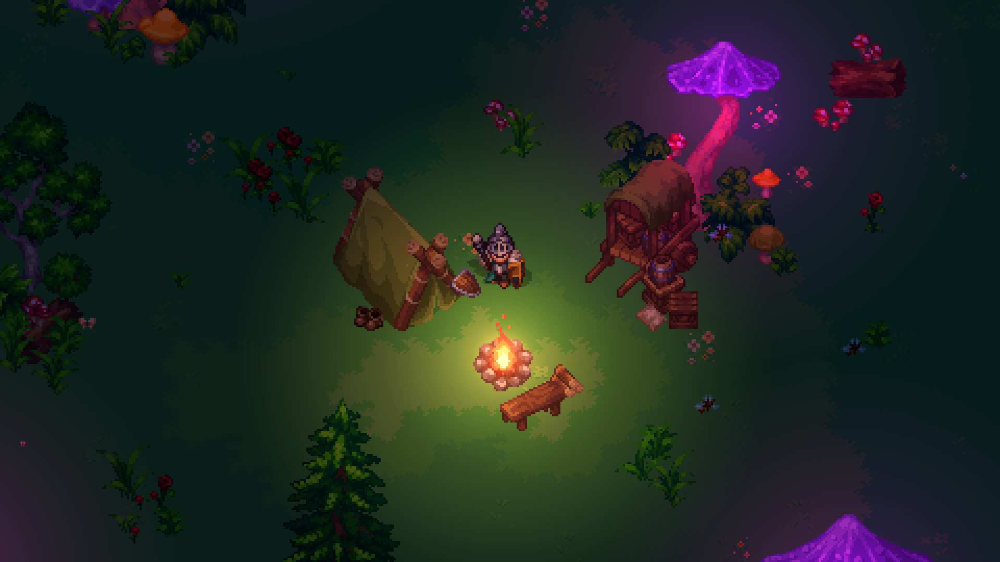

In development

The Last Magic
Founder & Lead Engineer · 2023 — PresentAn original sandbox RPG where magic and adventure meet. I'm building a fast, modular and scalable architecture. It began on Godot with a C++ backend and Lua, and now runs fully on Unity (C#), networking over UDP via PurrNet (an open-source library I contribute to) into my own C# gateway, with Redis keeping data synchronized in real time across servers, responsive even under heavy load.
- Unity · C#
- PurrNet (UDP)
- Custom C# Gateway
- Redis